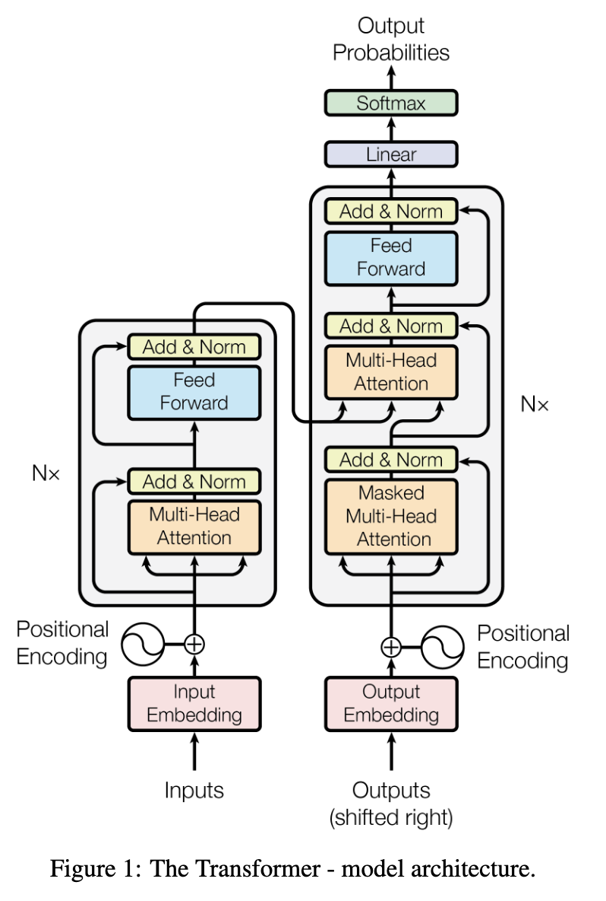

Building a GPT From Scratch summary
Karpathy’s gpt_dev.ipynb summarized by gemini, reviewed by me.
Building a GPT From Scratch: A Character-Level Approach
Understanding the Core Concepts (Based on A. Karpathy’s NanoGPT)
Objective
- Goal: To understand the fundamental steps and components involved in building and training a simple Generative Pre-trained Transformer (GPT) model.
- Approach: Character-level text generation on the Tiny Shakespeare dataset.
- Focus: Key concepts: Tokenization, Embedding, Self-Attention, Transformer Blocks, Training.
The Task - Language Modeling
- Core Idea: Predict the next character in a sequence given the preceding characters.
- Example: Given
"Hello", predict" ". Given"Hello ", predict"w". - Why Characters? Simplifies the process, no complex tokenizers needed initially. Demonstrates core concepts effectively.
- Dataset: Tiny Shakespeare (~1 million characters).
Data Preparation - Step 1: Loading & Inspection
- Load the text data (
input.txt). - Inspect basic properties:
- Total number of characters.
- A sample of the text content.
- Identify the set of unique characters (the vocabulary).
vocab_size: Number of unique characters (e.g., 65 in the notebook).
Data Preparation - Step 2: Tokenization
- Concept: Convert characters into numerical representations that the model can process.
- Mapping:
stoi(string-to-integer): Assign a unique integer to each character in the vocabulary.itos(integer-to-string): The reverse mapping.
- Encoding/Decoding: Functions to convert text to sequences of integers and back.
- Entire Dataset: Convert the full text into a single long sequence of integers (a PyTorch Tensor).
Data Preparation - Step 3: Creating Batches for Training
- Goal: Feed the model chunks of data efficiently.
block_size(Context Length): How many preceding characters the model looks at to predict the next one (e.g., 8, then 32).- Input (
x) / Target (y):- For a sequence:
[18, 47, 56, 57, 58, 1, 15, 47, 58] (block_size=8) x(input context):[18, 47, 56, 57, 58, 1, 15, 47]y(target next char):[47, 56, 57, 58, 1, 15, 47, 58]- The model learns: When input is
[18], target is47. When input is[18, 47], target is56, etc.
- For a sequence:
batch_size: Number of independent sequences processed in parallel for efficiency (e.g., 4, then 16/32).get_batchFunction: Randomly samples starting points to create batches ofxandy.
A Simple Start: Bigram Language Model
- Idea: The simplest possible model. Predicts the next character based only on the immediately preceding character.
- Mechanism: Uses an Embedding Table.
- Size:
vocab_sizexvocab_size. - Row
icontains the model’s predicted scores (logits) for the next character when the input character isi.
- Size:
- Limitation: Ignores all context beyond the last character. Output often looks random/nonsensical (as seen in the early
generateexample).
The Key Idea: Self-Attention
- Problem: How can tokens (characters) aggregate information from earlier tokens in the sequence in a data-dependent way?
- Intuition: For a given token, we want it to “look” at previous tokens and decide which ones are most relevant for predicting the next token. It then aggregates information from those relevant tokens.
- Mechanism: Weighted aggregation based on token similarity.
Self-Attention: Query, Key, Value
- For each token (represented as a vector after embedding):
- Query (Q): What I’m looking for.
- Key (K): What information I contain.
- Value (V): The actual information I’ll provide if attended to.
- Process:
- Calculate Attention Scores: How much does my Query (Q) match each previous Key (K)? (
Q @ K^T). - Scale scores (divide by
sqrt(head_size)). - Mask: Prevent tokens from attending to future tokens (use
trilmask, set future scores tofloat('-inf')). Crucial for autoregressive generation. - Softmax: Convert scores into probabilities (weights) that sum to 1.
- Aggregate Values: Compute weighted sum of Values (V) using the softmax weights (
softmax(scores) @ V).
- Calculate Attention Scores: How much does my Query (Q) match each previous Key (K)? (
- Result: An output vector for each token that incorporates information from relevant preceding tokens.
Enhancements: Multi-Head Attention & Scaling
- Multi-Head Attention:
- Run the self-attention mechanism multiple times in parallel (“heads”) with different Q, K, V projections.
- Allows the model to focus on different types of relationships/information simultaneously.
- Concatenate results from all heads and project back to the original dimension.
- Scaled Attention: Dividing scores by
sqrt(head_size)prevents scores from becoming too large, keeping softmax from producing overly sharp distributions and aiding training stability.
The Transformer Block
- The core building block of the GPT model. Combines:
- Communication (Self-Attention): Tokens gather information (
MultiHeadAttention). Followed by Layer Normalization. - Computation (Feed-Forward): Processes the aggregated information independently at each position (
FeedForwardnetwork - usually a simple MLP). Followed by Layer Normalization.
- Communication (Self-Attention): Tokens gather information (
- Residual Connections: Add the input
xto the output of both the attention and feed-forward layers (output = x + SubLayer(LayerNorm(x))). Helps with training deep networks (gradient flow). - Layer Normalization: Normalizes features across the embedding dimension for each token independently. Stabilizes training.
Positional Encoding
- Problem: Self-attention itself doesn’t know the order of tokens (it just sees a set of vectors). “A B C” looks the same as “C B A” to attention alone.
- Solution: Add information about the token’s position in the sequence.
- Method (in notebook): Learnable Positional Embeddings. Create an embedding table (
position_embedding_table) of sizeblock_sizexembedding_dim. Add the corresponding position embedding to the token embedding.
Full GPT Model Architecture
- Input: Sequence of token indices
(B, T). - 1. Embeddings:
- Token Embeddings (
token_embedding_table):(B, T) -> (B, T, C) - Positional Embeddings (
position_embedding_table):(T) -> (T, C) - Sum them:
x = tok_emb + pos_emb
- Token Embeddings (
- 2. Transformer Blocks: Pass
xthrough multipleBlocklayers (n_layertimes). Each block contains Multi-Head Attention and Feed-Forward layers with Residuals and LayerNorm.x = blocks(x) - 3. Final Layer Norm:
x = ln_f(x) - 4. Linear Head: Project final embeddings to vocabulary size (
lm_head).logits = lm_head(x)->(B, T, vocab_size) - Output: Logits (raw scores) for the next token prediction at each time step.

Training Loop
- Objective: Adjust model parameters (weights) to minimize prediction error.
- Loss Function: Cross-Entropy Loss (compares predicted logits against the actual target
y). - Steps (repeated
max_iterstimes):get_batch: Sample a batch of inputs (xb) and targets (yb).- Forward pass: Calculate
logitsandlossusing the model (logits, loss = model(xb, yb)). optimizer.zero_grad(): Clear old gradients.loss.backward(): Compute gradients (how much each parameter contributed to the loss).optimizer.step(): Update parameters using an optimizer (e.g., AdamW) based on gradients and learning rate.
- Evaluation: Periodically check loss on a validation set (
estimate_loss) to monitor overfitting.
Note: Understanding the Loss Function: Cross-Entropy
1. The Goal: * Our model needs to predict the correct next character out of all possible characters in the vocabulary (e.g., 65 options in Tiny Shakespeare).
2. Model’s Prediction: * For a given context, the model outputs logits – raw scores for each possible next character. * Example Logits: {'a': 0.1, 'b': -2.0, 'c': 1.5, ...} * These logits are converted into probabilities using the Softmax function. Softmax makes sure probabilities are between 0 and 1, and they all add up to 1. * Example Probabilities: {'a': 0.20, 'b': 0.02, 'c': 0.78, ...} * This probability distribution represents the model’s belief about what the next character will be.
3. The Target (Ground Truth): * We know the actual next character from the training data. * Think of the target as a “perfect” probability distribution: 100% probability for the correct character and 0% for all others. * Example Target (if ‘c’ is the correct next char): {'a': 0, 'b': 0, 'c': 1.0, ...}
4. What is Cross-Entropy Loss? * It measures the difference (or “distance”) between the model’s predicted probability distribution and the target distribution. * Essentially, it asks: “How well do the model’s predicted probabilities match the actual outcome?”
5. How it Works (Intuition): * Cross-Entropy focuses heavily on the probability the model assigned to the correct character. * A simplified way to think about it for this single-correct-answer task is: Loss = -log(predicted_probability_of_the_correct_character) * Why -log? * If prediction for the correct character is high (e.g., 0.9), log(0.9) is slightly negative, so -log(0.9) is a small positive loss. (Good!) * If prediction for the correct character is low (e.g., 0.01), log(0.01) is very negative, so -log(0.01) is a large positive loss. (Bad!) * It penalizes the model heavily for being wrong, especially if it was confident (assigned low probability to the correct answer).
6. Training Goal: * Minimize the Cross-Entropy loss. This forces the model to learn parameters that assign higher probabilities to the correct next characters across the training data.
Generation (Inference)
- Goal: Produce new text.
- Process (Autoregressive):
- Start with an initial context (e.g., a single token like newline or
torch.zeros). - Feed the current context (up to
block_sizelast tokens) into the model to getlogitsfor the next token. - Focus on the
logitsfor the very last time step. - Apply
softmaxto get probabilities. - Sample the next token index based on these probabilities (
torch.multinomial). - Append the sampled token index to the context.
- Repeat steps 2-6 for
max_new_tokens. decodethe final sequence of indices back into text.
- Start with an initial context (e.g., a single token like newline or
Key Takeaways & Next Steps
- Recap: Built a character-level GPT using core components: Embeddings (Token+Position), Self-Attention (Q,K,V), Transformer Blocks (Attention + FeedForward + Residuals + LayerNorm), and a standard training loop.
- Self-Attention: The key mechanism allowing tokens to communicate across the sequence.
- Transformer Blocks: The repeatable unit combining communication and computation.
- Next Steps: Scaling up (more data, larger
n_embd,n_head,n_layer), using sub-word tokenization (like BPE), exploring different architectures, fine-tuning on specific tasks.